conserto em 30 minutos
conserto em 30 minutos
INFORMAMOS AOS NOSSOS CLIENTES QUE ORÇAMENTO E CONSERTO EM 30 MINUTOS SERÃO REALIZADOS DESDE QUE:
A PREFERENCIA SERÁ DE QUEM ESTIVER AGUARDANDO
POIS PODE HAVER DIFICULDADE EM ENCONTRAR PEÇAS OU FAZER ADAPTAÇÕES
POIS ALGUMAS VEZES VEM TODO MEXIDO, FALTANDO PEÇAS OU COM A FIAÇÃO TROCADA
(08:30h às 11:30h e 13h às 16:30h) APÓS ESTE HORARIO SERÁ ORÇADO E CONSERTADO NO DIA SEGUINTE
NESSE CASO PRECISA-SE DE ATÉ 15 DIAS PARA FICAR PRONTO
DENTRO DOS 30 MINUTOS ESTÁ INCLUSO A LIMPEZA E HIGIENIZAÇÃO. MAS CASO O APARELHO ESTEJA MUITO ENGORDURADO, COM PÓ INCRUSTADOS OU PRECISE DE CUIDADOS EXTRAS (POLIMENTO, TIRAR MANCHAS, LIMPEZA DOS DUTOS) PODE DEMORAR UM POUCO MAIS.
